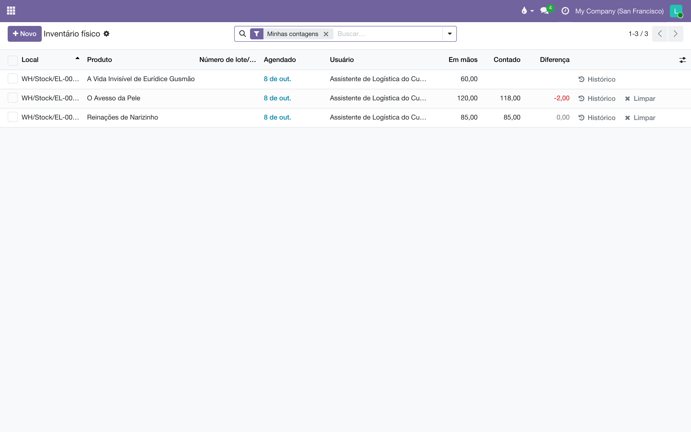

Inventário físico: contar e ajustar
O inventário é feito em dois gestos, por duas pessoas. Quem está no depósito conta: vai à prateleira e escreve quantos exemplares há de cada título. O gerente aplica: revisa a diferença entre o contado e o que o sistema esperava, e só então a quantidade em mãos muda. Este manual mostra as duas metades — e por que a segunda é só do gerente.
Contar não é ajustar
A tela tem uma linha por título em cada prateleira, e duas colunas que importam:
| Coluna | O que é | Quem escreve |
|---|---|---|
| Em mãos | O que o sistema acha que há na prateleira — a soma de tudo o que entrou e saiu por transferências validadas. | Ninguém. Ela muda por movimento. |
| Contado | O que a pessoa achou na prateleira. Fica em branco até alguém contar. | Quem conta: o assistente. |
| Diferença | Contado menos Em mãos. Negativa quando falta livro, positiva quando sobra. | Ninguém. É a conta das duas. |
Preencher Contado não mexe no estoque: é um registro à espera. O que mexe é o botão Aplicar, que transforma a diferença num movimento de ajuste: a quantidade em mãos passa a ser a contada, e o livro que faltava vai para "Perda de inventário", com data, prateleira e quem aplicou no histórico. Esse clique é o que muda o número que o comercial, o acerto de consignação e o financeiro leem — e por isso é só do gerente.
| Gesto | Assistente | Gerente |
|---|---|---|
| Pedir uma contagem (Solicitar uma contagem) | — | sim |
| Imprimir a Folha de contagem | sim | sim |
| Preencher Contado, linha a linha ou pela folha | sim | sim |
| Criar linha para livro que estava na prateleira e não na lista | sim | sim |
| Limpar a própria contagem antes de aplicada | sim | sim |
| Aplicar, Aplicar tudo, resolver um conflito | — | sim |
| Mudar Quantidade em mãos na ficha do livro | — | sim |
| Definir como 0, Realocar, apagar linha | — | sim |
Como o gerente pede uma contagem
O inventário começa pelo gerente: ele escolhe o que se conta e quem conta. Pode ser uma prateleira, um título em todas as prateleiras, ou o depósito inteiro — o Odoo não tem "abrir um inventário"; tem linhas com uma data e um responsável.
- Abra . Agrupe por Local e abra o grupo da prateleira, ou filtre pelo código dela (EL-000196) ou pelo produto. Marque as linhas que vão ser contadas; para a prateleira inteira, a caixa do cabeçalho.
- Clique em Solicitar uma contagem. Em Atribuir a, escolha quem vai contar; na data agendada (o campo ainda aparece em inglês, Scheduled at), o dia. Deixe Atribuir a vazio para a contagem ficar aberta a qualquer um da equipe.
- Confirmar. As linhas ganham a data e o nome, e passam a aparecer no filtro Minhas contagens de quem foi escolhido.
- Se a contagem for de papel, marque as linhas de novo e imprima a Folha de contagem (menu Imprimir). Ela sai com uma coluna em branco para escrever.

Como o assistente conta
- Abra . O filtro Minhas contagens já vem ligado: só o que foi pedido a você. Para ver o que está no prazo, acrescente A ser contado.
- Vá prateleira por prateleira: agrupe por Local ou filtre pelo código. A ordem crescente do código é a ordem do passeio no depósito.
- Na prateleira, conte cada título e escreva o número na coluna Contado. Zero também é contagem: um título que não está mais lá recebe 0, não fica em branco.
- Quando a contagem bate com o esperado, não precisa digitar: marque a linha e use , que copia Em mãos para Contado.
- Achou na prateleira um livro que não está na lista? Clique em Novo, escolha o Local (a prateleira), o Produto e escreva o Contado. A linha nasce com Em mãos zero e a diferença positiva — e também espera o gerente.
- Clique em salvar. A coluna Diferença aparece, e a linha fica marcada como pendente de aplicação. Errou? Limpar na própria linha apaga a sua contagem e nada mais.

Como o gerente aplica
- No , ligue o filtro A ser aplicado: são as linhas que alguém contou e ainda não foram aplicadas, com a Diferença à mostra e quem contou na coluna Usuário.
- Revise as diferenças grandes antes de clicar. Uma diferença de dezenas num título que acabou de ser separado costuma ser contagem antes da transferência, não livro sumido: Histórico na linha mostra os últimos movimentos daquela prateleira.
- Para aplicar uma linha, clique em Aplicar nela mesma. Para aplicar várias, marque-as e clique em Aplicar no cabeçalho; para aplicar tudo o que está contado na lista filtrada, Aplicar tudo.
- Escreva o Motivo do inventário ("Inventário de outubro", "Contagem da prateleira 196") e confirme em Atualizar quantidades. O motivo é o nome do movimento no histórico de cada livro.


Por que só o gerente aplica
No Odoo de fábrica, quem conta também aplica: o grupo "Inventário: Usuário" vê os botões Aplicar e Aplicar tudo. O Liber fecha isso em dois lugares, porque um botão escondido não fecha nada: a tela deixa de oferecer os botões ao assistente, e o sistema recusa o ajuste por qualquer porta — a linha, o cabeçalho, a ficha do produto, uma chamada de fora — quando quem pede não é administrador do Inventário. A contagem recusada não se perde: fica na coluna Contado, esperando.
Quem pode o quê
| Perfil | Conta | Pede contagem | Aplica | Em mãos na ficha |
|---|---|---|---|---|
| Logística, Assistente | sim | — | — | lê |
| Logística, Gerente e Direção | sim | sim | sim | edita |
| Comercial, Gerente | sim | — | — | lê |
| Demais usuários internos | — | — | — | lê, onde já liam estoque |
Quando algo não sai como esperado
| O que aparece | Por quê | O que fazer |
|---|---|---|
| "Só um administrador do Inventário aplica um ajuste de estoque…" | Você não é gerente da Logística. A contagem ficou gravada. | Avise o gerente: a linha está no filtro A ser aplicado dele. |
| A lista abre vazia para mim | O filtro Minhas contagens vem ligado, e ninguém lhe pediu contagem. | Tire o filtro para ver tudo, ou peça ao gerente que atribua a contagem a você. |
| Não vejo o botão Aplicar nem Aplicar tudo | São do gerente. A tela não os mostra a quem conta. | Nada a fazer: contar é o seu trabalho; o resto é dele. |
| "Quantidades já definidas" | Você usou Definir como a quantidade em mãos numa linha que já tinha contagem. | Cancelar mantém a contagem que existia; Continuar substitui pela quantidade em mãos. |
| A linha está em Conflitos | Houve movimento na prateleira depois da contagem. | O gerente decide na caixa de conflito, ou pede recontagem. |
| Marquei um produto como estocável e deu erro de acesso | Tornar estocável um produto que já teve movimentos zera o estoque dele — é um ajuste de inventário, e passa pela mesma trava. | Peça ao gerente da Logística. |
O que não fazer
- Não use a contagem para mover livro de prateleira. Zero numa e o total na outra são duas perdas disfarçadas. Mover é transferência interna ou bipagem.
- Não deixe em branco o que não encontrou. Em branco é "não contei"; 0 é "contei e não há". A diferença aparece no acerto de consignação e no financeiro.
- Não conte prateleira com separação em andamento. O livro que está na caixa e ainda não saiu no sistema vira conflito. Conte antes da separação ou depois da validação.
- Não ajuste pela ficha do livro. O campo Quantidade em mãos da ficha grava o ajuste na raiz do armazém (EL-VG/Stock), não na prateleira: a prateleira continua com o número antigo e a raiz ganha o novo. Ajuste é no Inventário físico, na linha da prateleira.
- Não aplique sem motivo. "Inventário físico" é o que o Odoo escreve sozinho; "Inventário de outubro, prateleiras 100–199" é o que alguém vai agradecer em março.